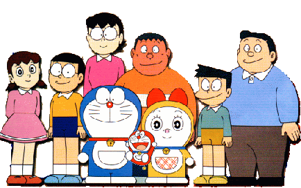

空間校正
Set Scale
Analyze > Set Scale...
使用此對話框來定義當前影像的空間比例，以便測量結果能以校正後的單位（例如公分、毫米）呈現。
在執行此指令之前，應先使用直線選取工具畫一條對應已知長度的線段。然後，打開 Set Scale 對話框，輸入已知的距離和測量單位，再點擊「OK」。ImageJ 會根據您所畫線段的長度，自動填入「Distance in Pixels」（像素距離）欄位。
- Distance in pixels: 影像中線段選區的長度（像素單位）。ImageJ會自動填入。
- Known distance: 您已知的該線段的實際長度。
- Pixel aspect ratio: 像素的長寬比。通常保持為 1.0。
- Unit of length: 您輸入的已知長度的單位（例如 cm, mm, um）。
- Global: 若勾選此項，此空間校正設定將會應用於之後開啟的所有影像，直到您關閉 ImageJ 或設定新的比例尺。
其他設定
- 將「Distance in Pixels」設為 0 可以恢復為像素測量。
- 將「Pixel Aspect Ratio」（像素長寬比）設定為非 1.0 的值，可以支援不同的水平和垂直空間比例，例如水平方向為 100 像素/公分，而垂直方向為 95 像素/公分。若要設定像素長寬比，請先測量一個已知長寬比為 1:1 的數位化物件的寬度和高度（以像素為單位）。將測得的寬度（像素）輸入到「Distance in Pixels」，將已知的寬度輸入到「Known Distance」。然後，用寬度除以高度計算出長寬比，並將其輸入到「Pixel Aspect Ratio」欄位。
圖上加入比例尺
- 設定好之後，請再執行
Analyze › Tools › Scale Bar...，可以將比例尺加在圖上。 - 觀察
Image > Properties...與Image > Show Info...。兩者都會顯示空間校正的訊息。
實作
哆啦A夢有多高？
根據wikipedia，哆啦A夢的檔案如下:
- 體重：129.3公斤
- 身高：129.3公分
- 頭圍：129.3公分
- 見到老鼠的驚嚇跳起來的高度：129.3公分
- 見到老鼠的逃跑時速：129.3公里/小時。 是因為哆啦A夢的出生日期是2112/09/03，故皆為1293
實作步驟

- 利用哆啦A夢的身高當作比例尺
- 分析大雄媽媽有多高？
- 在圖上加上比例尺。